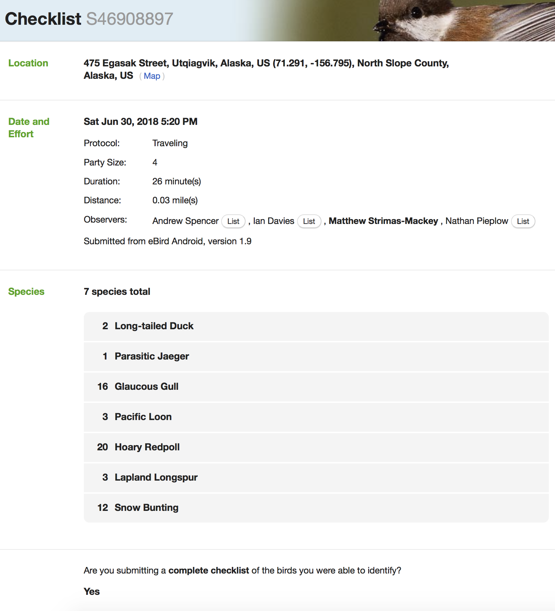
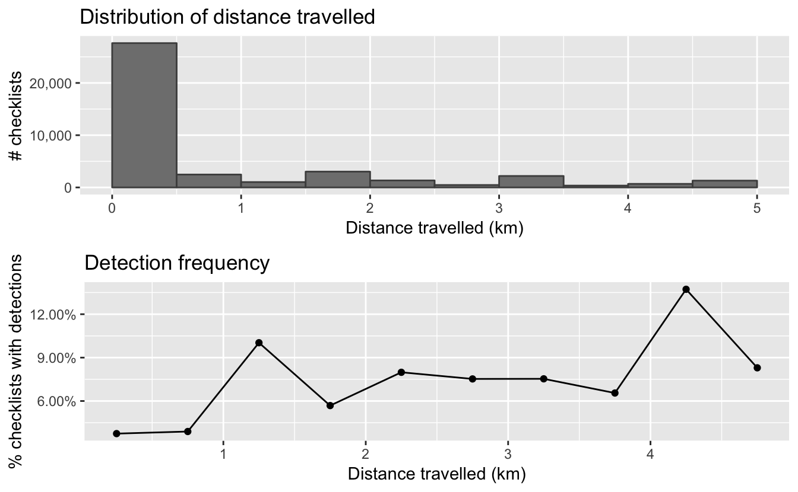
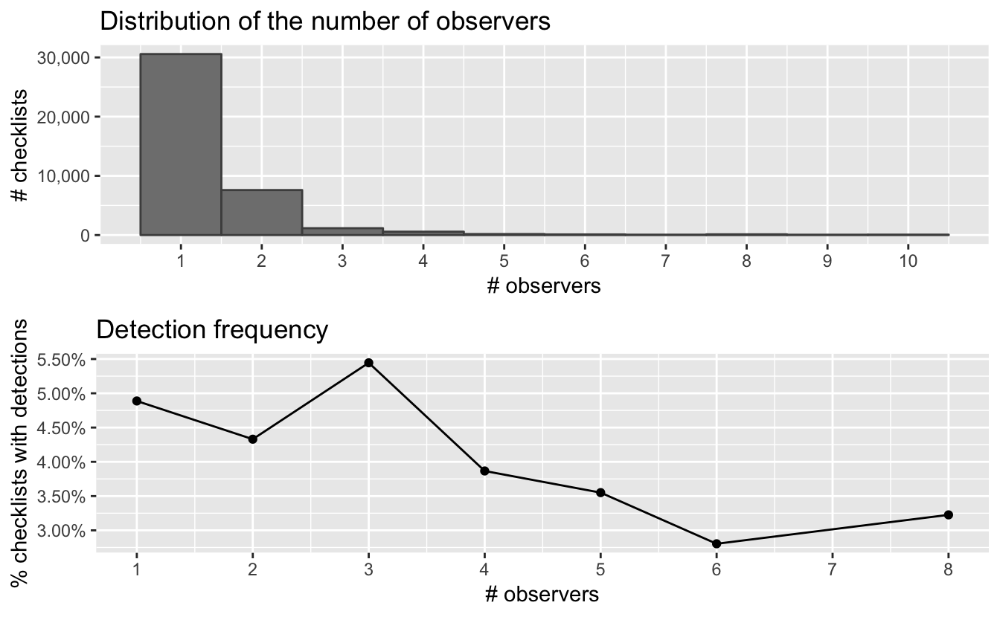

Chapter 2 eBird Data
2.1 Introduction
eBird data are collected and organized around the concept of a checklist, representing observations from a single birding event, such as a 1 km walk through a park or 15 minutes observing bird feeders in your backyard. Each checklist contains a list of species observed, counts of the number of individuals seen of each species, the location and time of the observations, and a measure of the effort expended while collecting these data. The following image depicts a typical eBird checklist as viewed on the eBird website:

Although eBird collects semi-structured citizen science data, three elements of eBird checklists distinguish them from similar sources. First, eBird checklist require users to specify the survey protocol they used, whether it’s traveling, stationary, incidental (i.e. if the observations were collected when birding was not the primary activity), or one of the other protocols. Second, in addition to typical information on when and where the data were collected, checklists contain effort information specifying how long the observer searched, how far they traveled, and how many observers were part of the party. Finally, observers are asked to indicate whether they are reporting all the birds they were able to identify. Checklists with all species reported, known as complete checklists, enable researchers to identify which species were not detected (rather than just not reported). These inferred non-detections allow data to be zero-filled, so there’s a zero count for any species not recorded. Complete checklists with effort information facilitate robust analyses, and thus represent the gold standard of eBird checklists. Because of these factors, eBird data are often referred to as semi-structured (Kelling et al. 2018).
Access to the complete set of eBird observations is provided via the eBird Basic Dataset (EBD). This is a tab-separated text file, released monthly, containing all validated bird sightings in the eBird database at the time of release. Each row corresponds to the sighting of a single species within a checklist and, in addition to the species and number of individuals reported, information is provided about the checklist (location, time, date, search effort, etc.). An additional file, the Sampling Event Data (SED), provides just the checklist data. In this file, each row corresponds to a checklist and only the checklist variables are included, not the associated species data. For complete checklists, the SED provides the full set of checklists in the database, which is needed to zero-fill the data. In particular, if a checklist is complete and doesn’t report a species, we can infer that there is a 0 count for that species on that checklist. In addition, checklists with no species recorded (yes, there exist), will not appear in the EBD, so the SED is required to identify these checklists.
In the previous chapter, we described how to access and download the EBD. In this chapter, we’ll demonstrate how to use the R package auk to extract subsets of the data for analysis. We’ll show how to import the data into R and perform some pre-processing steps required to ensure proper analysis of the data. Finally, we’ll zero-fill the data to produce presence-absence eBird data suitable for modeling species distribution and abundance. In the interest of making examples concrete, throughout this chapter, and those that follow, we’ll use the specific example of Wood Thrush in Bird Conservation Region (BCR) 27 (“Southeastern Coastal Plains”) in June for our analyses. Before we get started, we suggest creating a new RStudio project for following along with these examples; this will ensure your working directory is always the project directory and allow us to use relative path.
2.1.1 eBird taxonomy
eBird uses its own taxonomic system, updated annually after expert review every August. A notable benefit of these annual, system-wide updates is that splits and lumps are nearly instantly propagated across the entire eBird database. When necessary, expert reviewers manually sort through observations and assign records to current taxonomic hypotheses to the extent possible. This ensures that both new and historical eBird data conform to the updated taxonomy. In addition, after the taxonomy update, both the EBD and auk are updated to reflect the changes.
We emphasize that for any eBird analysis, you should consider the taxonomy of your study organisms, and whether you’re accessing the intended data from eBird. For example, are you interested in all Willets or do you want to treat the eastern and western populations separately since they’re completely allopatric on their breeding grounds? Do you want to do an analysis combining Greater and Lesser Yellowlegs? eBirders have the option of recording observations for taxa above (e.g. at genus level) or below (e.g. at subspecies level) the species level. These more granular taxonomic assignments are available in the EBD. In many cases taxonomic differences can be dealt with by querying specific subspecies, or multiple species, and splitting and lumping after the query as necessary. However, note that the majority of eBird users don’t assign their observations to subspecies, so querying taxa below species will result in a much smaller dataset.
If you’re not interested in these taxonomic nuances, auk will handle the taxonomy seamlessly for you by resolving all observations to species level. Indeed, for the example in this chapter, we’ll use all Wood Thrush observations and not delve into taxonomic issues further.
2.2 Data extraction with auk
eBird contains an impressive amount of data (nearly 600 million bird observations!); however, this makes the EBD particularly challenging to work with due to its sheer size (over 200 GB!). Text files of this size can’t be opened in R, Excel, or most other software. Fortunately, the R package auk has been specifically designed to extract subsets of data from the EBD for analysis using the Unix command line text processing utility AWK. The goal when using auk should always be to subset the full EBD down to a manageable size, small enough that it can be imported into R for further processing or analysis. In our case, that will mean extracting Wood Thrush records from BCR 27 in June.
Filtering the EDB using auk requires three steps. First, reference the EBD and SED using the function auk_ebd(). If you’ve followed the instruction in the Introduction for downloading eBird data, you’ll have these files on your computer and will have pointed auk to the directory they’re stored in using auk_set_ebd_path(). If you intend to zero-fill the data, you’ll need to pass both the EBD and SED to auk_ebd(), this ensures that the same set of filters is applied to both files so they contain the same population of checklists. It’s critical that the EBD and SED are both from the same release of the eBird data.
library(auk)
library(lubridate)
library(sf)
library(gridExtra)
library(tidyverse)
# resolve namespace conflicts
select <- dplyr::select
ebd <- auk_ebd("ebd_relDec-2018.txt",
file_sampling = "ebd_sampling_relDec-2018.txt")Next, define the filters that you want to apply to the EBD. Each field that you can filter on has an associated function. For example, we’ll filter to Wood Thrush observations with auk_species(), from BCR 27 with auk_bcr(), in June of any year with auk_date(), restrict observations to those from either Stationary or Traveling protocols with auk_protocol(), and only use complete checklists auk_complete() since we intend to zero-fill the data. For a full list of possible filters, consult the package documentation.
ebd_filters <- ebd %>%
auk_species("Wood Thrush") %>%
# southeastern coastal plain bcr
auk_bcr(bcr = 27) %>%
# june, use * to get data from any year
auk_date(date = c("*-06-01", "*-06-30")) %>%
# restrict to the standard traveling and stationary count protocols
auk_protocol(protocol = c("Stationary", "Traveling")) %>%
auk_complete()
ebd_filters
#> Input
#> EBD: /Users/mes335/data/ebird/ebd_relDec-2018.txt
#> Sampling events: /Users/mes335/data/ebird/ebd_sampling_relDec-2018.txt
#>
#> Output
#> Filters not executed
#>
#> Filters
#> Species: Hylocichla mustelina
#> Countries: all
#> States: all
#> BCRs: 27
#> Bounding box: full extent
#> Date: *-06-01 - *-06-30
#> Start time: all
#> Last edited date: all
#> Protocol: Stationary, Traveling
#> Project code: all
#> Duration: all
#> Distance travelled: all
#> Records with breeding codes only: no
#> Complete checklists only: yesNote that printing the object ebd_filters shows what filters have been set. At this point, we’ve only defined the filters, not applied them to the EBD. The last step is to use auk_filter() to compile the filters into an AWK script and run it to produce two output files: one for the EBD and one for the SED. This step typically takes several hours to run since the files are so large. As a result, it’s wise to wrap this in an if statement, so it’s only run once.
# output files
f_ebd <- "data/ebd_woothr_june_bcr27.txt"
f_sampling <- "data/ebd_june_bcr27_sampling.txt"
# only run if the files don't already exist
if (!file.exists(f_ebd)) {
auk_filter(ebd_filters, file = f_ebd, file_sampling = f_sampling)
}These files are now a few megabytes rather than hundreds of gigabytes, which means they can easily be read into R! Don’t feel like waiting for auk_filter() to run? Download the data package mentioned in the introduction to get a copy of the EBD subset for Wood Thrush in June in BCR27 and proceed to the next section.
2.3 Importing and zero-filling
The previous step left us with two tab separated text files, one for the EBD and one for the SED. Next, we’ll use auk_zerofill() to read these two files into R and combine them together to produce zero-filled, detection/non-detection data (also called presence/absence data). To just read the EBD or Sampling Event Data, but not combine them, use read_ebd() or read_sampling(), respectively.
ebd_zf <- auk_zerofill(f_ebd, f_sampling, collapse = TRUE)When any of the read functions from auk are used, two important processing steps occur by default behind the scenes. First, eBird observations can be made at levels below species (e.g. subspecies) or above species (e.g. hybrids); however, for most uses we’ll want observations at the species level. auk_rollup() is applied by default when auk_zerofill() is used, and it drops all observations not identifiable to a species and rolls up all observations reported below species to the species level. eBird also allows for group checklists, those shared by multiple users. These checklists lead to duplication or near duplication of records within the dataset and the function auk_unique(), applied by default by auk_zerofill(), addresses this by only keeping one independent copy of each checklist. Finally, by default auk_zerofill() retuns a compact representation of the data, consisting of a list of two data frames, one with checklist data and the other with observation data; the use of collapse = TRUE combines these into a single data frame, which will be easier to work with.
Before continuing, we’ll transform some of the variables to a more useful form for modelling. We convert time to a decimal value between 0 and 24, and we force the distance travelled to 0 for stationary checklists. Notably, eBirders have the option of entering an “X” rather than a count for a species, to indicate that the species was present, but they didn’t keep track of how many were observed. During the modeling stage, we’ll want the observation_count variable stored as an integer and we’ll convert “X” to NA to allow this.
# function to convert time observation to hours since midnight
time_to_decimal <- function(x) {
x <- hms(x, quiet = TRUE)
hour(x) + minute(x) / 60 + second(x) / 3600
}
# clean up variables
ebd_zf <- ebd_zf %>%
mutate(
# convert X to NA
observation_count = if_else(observation_count == "X",
NA_character_, observation_count),
observation_count = as.integer(observation_count),
# effort_distance_km to 0 for non-travelling counts
effort_distance_km = if_else(protocol_type != "Traveling",
0, effort_distance_km),
# convert time to decimal hours since midnight
time_observations_started = time_to_decimal(time_observations_started)
)2.4 Accounting for variation in detectability
As discussed in the Introduction, variation in effort between checklists makes inference challenging, because it is associated with variation in detectability. When working with semi-structured datasets like eBird, one approach to dealing with this variation is to impose some more consistent structure on the data by filtering observations on the effort variables. This reduces the variation in detectability between checklists. Based on our experience working with these data, we suggest restricting checklists to less than 5 hours long and 5 km in length, and with 10 or fewer observers. Furthermore, we’ll only consider data from the past 10 years (2009-2018).
# additional filtering
ebd_zf_filtered <- ebd_zf %>%
filter(
# effort filters
duration_minutes <= 5 * 60,
effort_distance_km <= 5,
# last 10 years of data
year(observation_date) >= 2009,
# 10 or fewer observers
number_observers <= 10)Finally, there are a large number of variables in the EBD that are redundant (e.g. country and state names and codes) or unnecessary for most modeling exercises (e.g. checklist comments and Important Bird Area (IBA) code). These can be removed at this point, keeping only the variables we want for modelling. Then we’ll save the resulting zero-filled observations for use in later chapters.
ebird <- ebd_zf_filtered %>%
select(checklist_id, observer_id, sampling_event_identifier,
scientific_name,
observation_count, species_observed,
state_code, locality_id, latitude, longitude,
protocol_type, all_species_reported,
observation_date, time_observations_started,
duration_minutes, effort_distance_km,
number_observers)
write_csv(ebird, "data/ebd_woothr_june_bcr27_zf.csv", na = "")If you’d like to ensure you’re using exactly the same data as was used to generate this book, download the data package mentioned in the setup instructions.
2.5 Exploratory analysis and visualization
Before proceeding to fitting species distribution models with these data, it’s worth exploring the dataset to see what we’re working with. Let’s start by making a simple map of the observations. This map uses GIS data prepared in the introduction and available for download here.
# load and project gis data
map_proj <- st_crs(102003)
ne_land <- read_sf("data/gis-data.gpkg", "ne_land") %>%
st_transform(crs = map_proj) %>%
st_geometry()
bcr <- read_sf("data/gis-data.gpkg", "bcr") %>%
st_transform(crs = map_proj) %>%
st_geometry()
ne_country_lines <- read_sf("data/gis-data.gpkg", "ne_country_lines") %>%
st_transform(crs = map_proj) %>%
st_geometry()
ne_state_lines <- read_sf("data/gis-data.gpkg", "ne_state_lines") %>%
st_transform(crs = map_proj) %>%
st_geometry()
# prepare ebird data for mapping
ebird_sf <- ebird %>%
# convert to spatial points
st_as_sf(coords = c("longitude", "latitude"), crs = 4326) %>%
st_transform(crs = map_proj) %>%
select(species_observed)
# map
par(mar = c(0.25, 0.25, 0.25, 0.25))
# set up plot area
plot(st_geometry(ebird_sf), col = NA)
# contextual gis data
plot(ne_land, col = "#dddddd", border = "#888888", lwd = 0.5, add = TRUE)
plot(bcr, col = "#cccccc", border = NA, add = TRUE)
plot(ne_state_lines, col = "#ffffff", lwd = 0.75, add = TRUE)
plot(ne_country_lines, col = "#ffffff", lwd = 1.5, add = TRUE)
# ebird observations
# not observed
plot(st_geometry(ebird_sf),
pch = 19, cex = 0.1, col = alpha("#555555", 0.25),
add = TRUE)
# observed
plot(filter(ebird_sf, species_observed) %>% st_geometry(),
pch = 19, cex = 0.3, col = alpha("#4daf4a", 1),
add = TRUE)
# legend
legend("bottomright", bty = "n",
col = c("#555555", "#4daf4a"),
legend = c("eBird checklists", "Wood Thrush sightings"),
pch = 19)
box()
par(new = TRUE, mar = c(0, 0, 3, 0))
title("Wood Thrush eBird Observations\nJune 2009-2018, BCR 27")
In this map, the spatial bias in eBird data becomes immediately obvious, for example, notice the large number of checklists along the heavily populated Atlantic coast, especially around large cities like Jacksonville, Florida and popular birding areas like the Outer Banks of North Carolina.
It’s also valuable to explore some of the effort variables. In particular, we’ll look at the range of effort variables in the data and where the majority of the observations fall. For values of the effort covariates for which we have few observations, our models will likely not perform well.
2.5.1 Time of day
The chance of an observer detecting a bird when present can be highly dependent on time of day. For example, many species exhibit a peak in detection early in the morning during dawn chorus and a secondary peak early in the evening. With this in mind, the first predictor of detection that we’ll explore is the time of day at which a checklist was started.
# histogram
g_tod_hist <- ggplot(ebird) +
aes(x = time_observations_started) +
geom_histogram(binwidth = 1, center = 0, color = "grey30", fill = "grey50") +
scale_x_continuous(breaks = seq(0, 24, by = 3)) +
scale_y_continuous(labels = scales::comma) +
labs(x = "Hours since midnight",
y = "# checklists",
title = "Distribution of observation start times")
# histogram of detections
g_tod_hist_det <- ggplot(filter(ebird, species_observed)) +
aes(x = time_observations_started) +
geom_histogram(binwidth = 1, center = 0, color = "grey30", fill = "grey50") +
scale_x_continuous(breaks = seq(0, 24, by = 3)) +
scale_y_continuous(labels = scales::comma) +
labs(x = "Hours since midnight",
y = "# checklists w/ detections",
title = "Distribution of start times for checklists with detections")
# combine
grid.arrange(g_tod_hist, g_tod_hist_det)
The peak frequency of checklist submissions, and of those checklists with detections, occurs between 6 and 9 am. Therefore, further filtering to a subset of time during the day (e.g. 5am to 12pm) will help reduce variability in detection without reducing the total number of observations significantly.
2.5.2 Checklist duration
When we initially extracted the eBird data in Section @ref{ebird-extract}, we restricted observations to those from checklists 5 hours in duration or shorter to reduce variability. Let’s see what sort of variation remains in checklist duration.
# histogram
g_dur_hist <- ggplot(ebird) +
aes(x = duration_minutes / 60) +
geom_histogram(binwidth = 0.5, center = 0.25,
color = "grey20", fill = "grey50") +
scale_x_continuous(breaks = 0:5) +
scale_y_continuous(labels = scales::comma) +
labs(x = "Checklist duration (hours)",
y = "# checklists",
title = "Distribution of checklist durations")
# histogram of detections
g_dur_hist_det <- ggplot(filter(ebird, species_observed)) +
aes(x = duration_minutes / 60) +
geom_histogram(binwidth = 0.5, center = 0.25,
color = "grey20", fill = "grey50") +
scale_x_continuous(breaks = 0:5) +
scale_y_continuous(labels = scales::comma) +
labs(x = "Checklist duration (hours)",
y = "# checklists w/ detections",
title = "Distribution of durations for checklists with detections")
# combine
grid.arrange(g_dur_hist, g_dur_hist_det)
The majority of checklists are half an hour or shorter and there is a rapid decline in the frequency of checklists with increasing duration. Therefore, filtering checklists to less than one hour will reduce variation in detection with checklist duration.
2.5.3 Distance traveled
As with checklist duration, we expect a priori that the greater the distance someone travels, the greater the probability of encountering at least one Wood Thrush. Let’s see if this expectation is met. Note that we have already truncated the data to checklists less than 5 km in length.
# histogram
g_dist_hist <- ggplot(ebird) +
aes(x = effort_distance_km) +
geom_histogram(binwidth = 0.5, center = 0.25,
color = "grey20", fill = "grey50") +
scale_x_continuous(breaks = 0:5) +
scale_y_continuous(labels = scales::comma) +
labs(x = "Distance travelled (km)",
y = "# checklists",
title = "Distribution of distance travelled")
# histogram of detections
g_dist_hist_det <- ggplot(filter(ebird, species_observed)) +
aes(x = effort_distance_km) +
geom_histogram(binwidth = 0.5, center = 0.25,
color = "grey20", fill = "grey50") +
scale_x_continuous(breaks = 0:5) +
scale_y_continuous(labels = scales::comma) +
labs(x = "Distance travelled (km)",
y = "# checklists",
title = paste("Distribution of distance travelled",
"for checklists with detections"))
# combine
grid.arrange(g_dist_hist, g_dist_hist_det)
As with duration, the majority of observations are from short checklists (less than half a kilometer). One fortunate consequence of this is that most checklists will be contained within a small area within which habitat is not likely to show high variability. In chapter @ref{habitat}, we summarized habitat within circles having a 2.5 km diameter, centered on each checklist, and it appears that the vast majority of checklists willl stay contained within this area. As with other variables, eliminating checklists that are greater than one kilometer will increase the spatial accuracy of the observations and not significantly reduce sample sizes.
2.5.4 Number of observers
Next, let’s consider the number of observers whose observation are being reported in each checklist. We expect that at least up to some number of observers, reporting rates will increase; however, in working with these data we have found cases of declining detection rates for very large groups. Note that the data have been restricted to checklists with 10 or fewer observers, already removing the very largest groups (prior to filtering, some checklists had as many as 230 observers!).
# histogram
g_obs_hist <- ggplot(ebird) +
aes(x = number_observers) +
geom_histogram(binwidth = 1, center = 1,
color = "grey20", fill = "grey50") +
scale_x_continuous(breaks = 1:10) +
scale_y_continuous(labels = scales::comma) +
labs(x = "# of observers",
y = "# checklists",
title = "Distribution of number of observers")
# histogram of detections
g_obs_hist_det <- ggplot(filter(ebird, species_observed)) +
aes(x = number_observers) +
geom_histogram(binwidth = 1, center = 1,
color = "grey20", fill = "grey50") +
scale_x_continuous(breaks = 1:10) +
scale_y_continuous(labels = scales::comma) +
labs(x = "# of observers",
y = "# checklists",
title = paste("Distribution of number of observers",
"for checklists with detections"))
grid.arrange(g_obs_hist, g_obs_hist_det)
Due to the very small sample sizes of records with 3 or more observers, reducing the number of checklists from 40,477 to 40,059 records will reduce the need to model the number of observers as a covariate for detection, and not significantly reduce sample size.
References
Kelling, Steve, Alison Johnston, Daniel Fink, Viviana Ruiz-Gutierrez, Rick Bonney, Aletta Bonn, Miguel Fernandez, et al. 2018. “Finding the Signal in the Noise of Citizen Science Observations.” bioRxiv, May, 326314. https://doi.org/10.1101/326314.